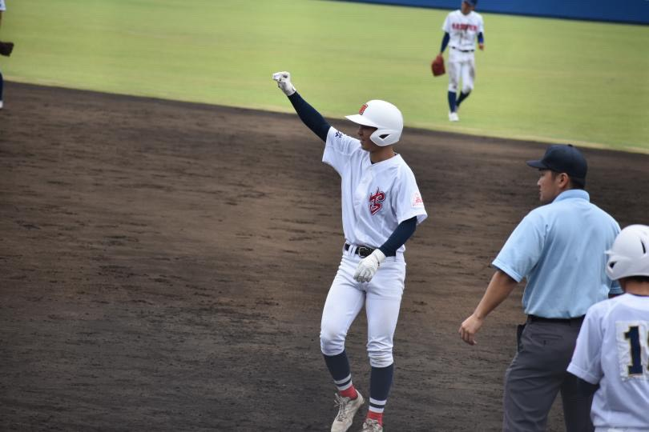

こんにちは！経済学部2年の岡野俊介です。 私は野球とアイドルが好きです。 高校最後の夏は、甲子園は惜しくも届かなかったものの、ベスト４という功績を残すことができました。 最近は、日本のプロ野球観戦や、草野球、アイドル現場に行くことを楽しんでいます。 来年の４月には、台湾のプロ野球を見に行く予定です。 自分は「Palpitink」というグループを推しています。 自分は台湾野球が大好きなので、この授業では、台湾の地図について学びたいです。